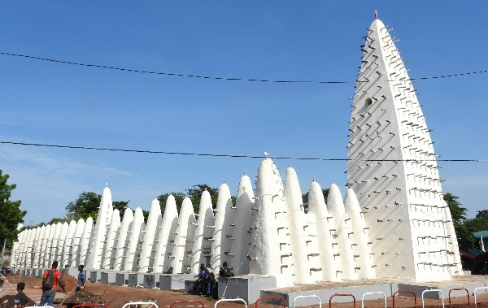
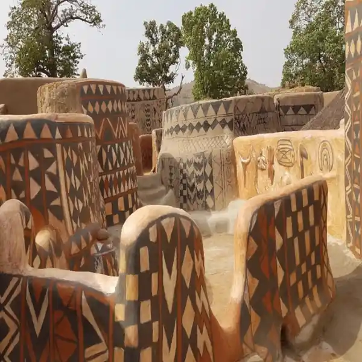
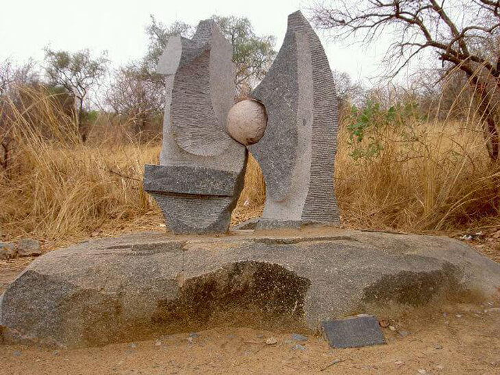
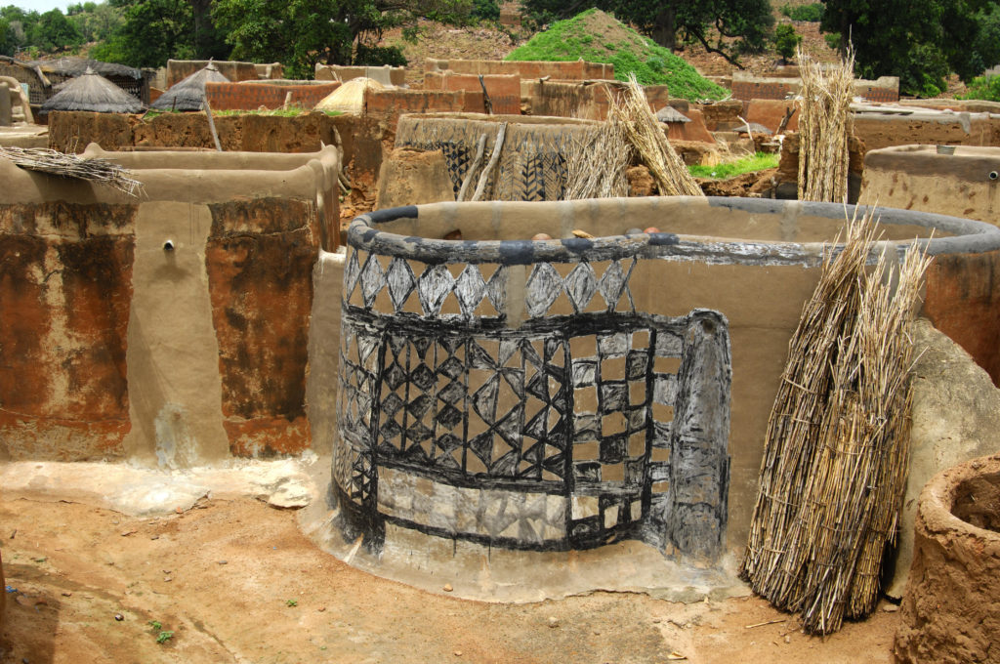

Galerie des Merveilles Bâties

Grande Mosquée de Bobo-Dioulasso
Style soudanais, construite en 1880. Un chef-d'œuvre d'architecture de terre.

Cour Royale de Tiébélé
Architecture Kassena avec des fresques murales géométriques peintes à la main.

Sculptures de Granit de Laongo
Un musée à ciel ouvert où la nature et la sculpture monumentale fusionnent.

Habitat traditionnel Gourounsi
Maisons en banco aux formes arrondies, souvent reliées entre elles.